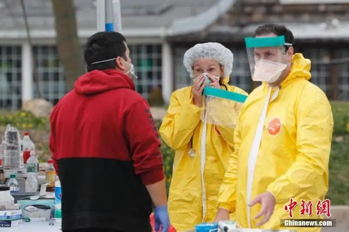

武汉新增确诊首度降至两位数，靠什么？
原文链接 备份链接 澎湃新闻记者 高宇婷 马作鹏 实习生 李彤 3月6日，武汉的新冠肺炎新增确诊病例自1月27日以来首度降至两位数，距离武汉封城，过去了44天。 根据湖北省卫健委3月7日发布的数据，截至3月6日24时，湖北新增新冠肺炎确诊 …

纽约州确诊病例数破万，已然成为美国新冠病毒疫情的“重灾区”。具体到市，全美人口最多的城市——纽约市，成了这次疫情的“震中”。迅速激增的病例数，使得纽约市医院不堪重负。
3月20日，《华尔街日报》采访了20名在纽约市工作的医务人员。他们当中有来自纽约最大公立医院的医生，称因防护物资短缺，他们在长达一周的时间里，都使用相同的口罩；还有一家急诊室的医生，称他们不得不重复使用防护服；另外还有医生说，一些大型医院的重症监护室（ICU）已处于“超负荷”状态；至少一家城市医院，面临呼吸机设备供应不足等问题，不得不向姊妹医院寻求帮助。

《华尔街日报》报道截图

一名老人在病房的地板上去世
“我们正在遭受打击”，纽约最大的医疗系统——诺斯威尔健康中心旗下、长岛犹太医疗中心的医生曼加拉·纳拉西姆（Mangala Narasimhan）表示，“我在ICU工作了15年，如今所发生的一切是我见过最糟糕的事”。
纳拉西姆表示，医院的ICU病房已人满为患，进入“超负荷”状态。如今她在ICU病房所看到的病人数量，是流感高峰期的三倍，其中60岁以下的病人占了相当大比例。
“过去10天，我看到的患严重呼吸系统疾病的病例，比我之前那些年见过的还要多”，纳拉西姆说。
诺斯威尔健康中心的发言人特里·利纳姆（Terry Lynam）表示，近日医院已将约2500名计划出院和取消手术的病人送回家，可在这之后，19日长岛犹太医疗中心约90%的床位又都满了。
利纳姆表示，医院一半的重症监护病人都是确诊新冠肺炎患者，当下他们还在增加重症监护的床位。
本周早些时候，纽约州官员表示，疫情预计在45天内达到顶峰，届时该州或需要多达11万张病床和3.7万张重症监护病床。然而目前纽约州只有5.3万张床位、3000张重症病床，这其中还有许多床位被其他疾病患者占用着。
布鲁克林的迈蒙尼德斯医疗中心一名医生表示，医院已经没有用来隔离确诊患者的空间了，正在将病情较轻的患者转移到其他地方。
“急需床位”，19日，一份发给纽约皇后区长老会医院的备忘录上这样写着，“我需要你们积极组织患者的出院计划”。
在该院工作的医生萨奎布·拉希姆（Saquib Rahim）表示，过去一周，潜在的、确诊的病例数激增，医院里大家手忙脚乱。一名出现新冠肺炎症状的老年患者，在病房的地板上去世。“我们从未见过这样的事情”，“祈祷我们能够阻止疫情发展”。

美国一医护人员转移新冠肺炎确诊病人 图自新华社
重复使用口罩和防护服
除了床位不足外，医院的防护物资也严重短缺。19日，纽约州护士协会在一封致州长科莫的信中写道，令人痛苦的是，他们4.2万名前线成员都没有保护自己免受病毒感染的防护装备。
《华尔街日报》拿到了这封信的副本，称该机构在信中警告说，倘若有员工因此被感染，“医院将停止运作”。
纽约大学朗格尼医学中心旗下的提许医院（Tisch Hospital）的一名医生表示，他们正在重复使用口罩和防护服，不用的时候就会用写着自己名字的纸袋装着，将其挂在墙上。
一名曼哈顿的护士哭着说，她对美疾控中心发布最新的防疫指南感到担忧，其建议医护人员在没有口罩的情况下，可以将头巾或围巾作为替代口罩的“最后手段”。
“现在是非常时期”，纽约大学朗格尼医学中心首席流行病学家迈克尔·菲利普斯（Michael Phillips）表示，医院要求员工遵循美疾控中心的指导，重复使用口罩，以缓解供应不足的局面。
纽约市最大的公立医院——贝尔维尤医院的一名医生表示，近几日仅是在贝尔维尤的一个科室里，就出现四名医生确诊的情况，还有几名医生在等待检测结果。另有多家医院的医生表示，他们担心医护人员也感染上病毒，尤其在没有足够的检测试剂的情况下。
贝尔维尤医院的另一名医生表示，他们每天要进行多达12次与新冠肺炎有关的插管，这一数字是正常情况下的五倍。倘若按目前趋势继续下去，“这完全是不可持续的”。一名医护人员则表示，当下工程师们正研究改造医院的空间，将88个区域改造成ICU病房。
运营着贝尔维尤医院等公立医院的纽约市健康与医院公司，其CEO米切尔·卡茨（Mitchell Katz）表示，他们正把包括呼吸机和防护装备等物资运送到有需要的医院。
报道指出，这次疫情中，令许多医疗工作者吃惊的是：患重病的青壮年要比他们预期的多得多。根据纽约市健康与心理卫生局20日公布的数据，该市所有确诊病例中，有56%的患者在50岁以下。
在皇后区的长岛犹太医疗中心，截至19日，有几名40岁以下的确诊患者在重症监护室接受呼吸机治疗，当中还有一些是20多岁的年轻人。
医护人员表示，病人们从轻度不适演变成呼吸困难，需要呼吸机帮助，这种迅速转变实在令人震惊，“过去一周的情况变得非常糟糕，我们都很紧张”。
20日，特朗普总统已宣布纽约州为疫情“重灾区”，将动用联邦资金进行协助。21日，州长科莫表示，纽约州确诊人数破万的原因在于，该州使用超过加州等近2倍的测试量。截至21日上午，纽约市确诊数已飙升至6211例。
文章来源：观察者网
作者：张晨静


推荐阅读
点击大图 |纽约告急！美国确诊数据翻番，“富人优先检测”引发巨大争议

点击大图 | 昨天，杭州景区堵成这样！北京市民排队赏春，成都的夜亮了，湖北也渐渐动了起来…****

原文链接 备份链接 澎湃新闻记者 高宇婷 马作鹏 实习生 李彤 3月6日，武汉的新冠肺炎新增确诊病例自1月27日以来首度降至两位数，距离武汉封城，过去了44天。 根据湖北省卫健委3月7日发布的数据，截至3月6日24时，湖北新增新冠肺炎确诊 …
原文链接 备份链接 我觉得，我们是来这里治病的，这种临时搭建起来的地方，基本条件过得去就可以了。特殊时期，大家需要互相谅解。我也相信，疫情过去后，一切都会好起来的。 口述 | 李 甜 整理 | 应 琛 我今年43岁，在武汉硚口区税务局工 …
原文链接 备份链接 03.02.2020本文字数：2583，阅读时长大约4.5分钟 导读：随着疫情扩散，确诊和疑似病患增多，病人能否求得一张床位备受关注，目前重灾区通过新建、改建、扩建形式增加床位，确保“应住尽住、应收尽收”。 作者 | …
原文链接 备份链接 【财新网】（记者 包志明）至今日（2020年3月22日）早上，官方披露的武汉市新冠肺炎新增确诊病例、新增疑似病例、现有疑似病例已连续四天为零。武汉官方今日凌晨也对此前两天在自媒体和朋友圈多有流传的几则传言做了辟谣和澄 …
原文链接 备份链接 该文传“玫瑰西园社区新增2例确诊病例”、“丽水康城小区又有新增病例”、同济医院新增100多例新冠确诊病例、放鹰台社区一刘姓婆婆在省人民医院就诊推诿的情况后，市委主要领导高度重视，责成有关单位迅速调查核实，具体情况如下： …